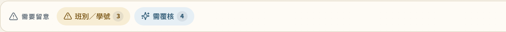
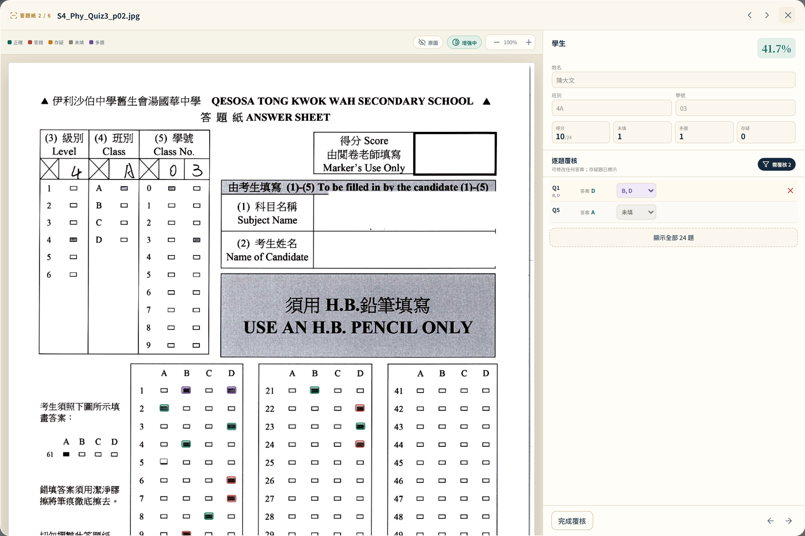
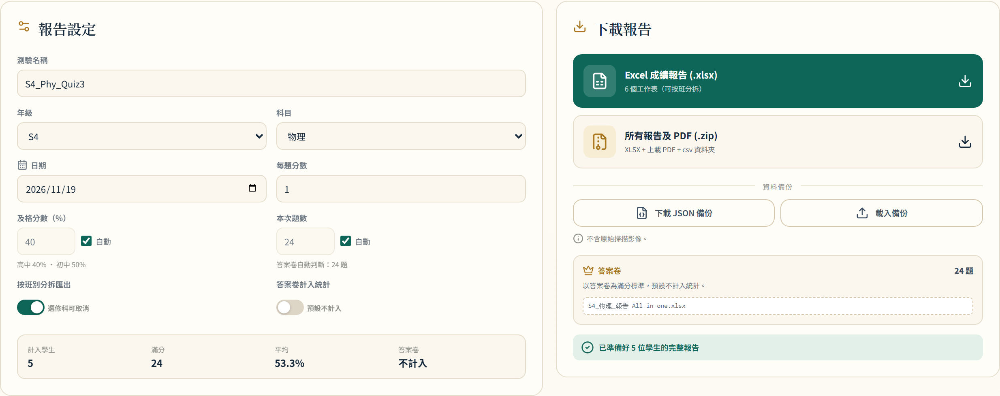

上載整疊答題紙 PDF，逐張覆核系統標示的問題，再匯出成績報告。
由一個 PDF，到一份可以交出去的成績報告，整個流程就在同一個頁面完成。
選擇年級及科目，把整疊答題紙拖進來。支援 PDF、JPG、PNG；PDF 會自動拆頁。第一張自動定為答案卷，只作標準，不計入統計。
系統會逐頁找出答題框，讀取班別、學號及每題答案，並自動判斷題數。頁數較多時，請等待進度完成。
畫面會列出有問題的學生：姓名不詳、多選、未填、班別／學號重複等。點任何一項，成績總表會自動篩選出相關學生。
打開學生的標記圖，核對有問題的題目；有需要便改正答案、姓名、班別或學號。確認後按「完成覆核」，狀態會變成「覆核完成」。
按「匯出成績」，下載 Excel（.xlsx）或「所有報告及 PDF」（.zip）。解壓後會有成績表、CSV 及你上載的原始 PDF。

批改後，系統只會把不肯定或需要人手確認的地方列出來。以下是最常見的幾種，逐項處理即可。
| 你會見到 | 代表甚麼 | 如何處理 |
|---|---|---|
| 姓名不詳無填名 | 名單找不到對應的班別／學號，或姓名欄空白。 | 在姓名欄直接輸入；插班生未有名單記錄，留空也可以。 |
| 多選double choices | 同一題有兩個或以上填畫，系統不能確定哪一個是答案。 | 開啟覆核，逐題選出正確的一項；若學生真的多選，按答案卷的標準處理。 |
| 未填blank | 該題沒有偵測到填畫，可能是真的空白，也可能是筆跡太淡。 | 先按「增強對比」或「原圖」查看；確認空白可保留「未填」，有答案便補選。 |
| 班別／學號重複名、重複學號 | 班別或學號讀不到，或同一班有兩張卷填了相同的班別及學號（例如重複掃描或寫錯）。 | 在成績總表或覆核畫面直接改正；改正後姓名會自動重新配對。 |
| 存疑 | 系統不確定該題的填畫（筆跡淡、陰影、擦不乾淨）。 | 一定要看原圖後再決定；修正後該題會由「存疑」移除。 |
| 漏填學號系統補上的值 | 黃色欄位是系統自動補上的班別、學號或姓名，通常是因為學號沒有填畫或讀不到。 | 對照名單確認；正確才保留，不確定便直接改正或清空。 |
| 答案未設定 | 答案卷有題目未設定答案，該題不會有人答對。 | 按「答案卷」開啟編輯器，補上答案即可。 |
| 未能辨識 | 整頁讀不到答題框，通常是掃描不完整或影像太差。 | 檢查該頁是否完整入框；必要時重掃該頁。 |


另可下載 JSON 備份，用作轉機或還原；備份不含掃描影像。
XLSX 內的 6 個基本工作表，以及按班分拆時新增的「班別統計」及每班工作表。CSV 以 UTF-8 編碼，Excel 可直接開啟。